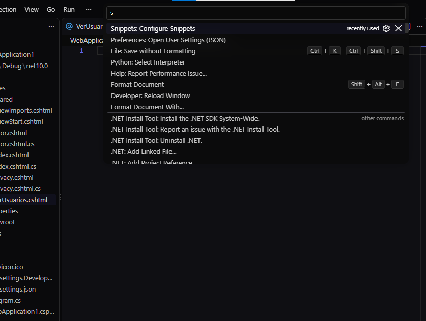
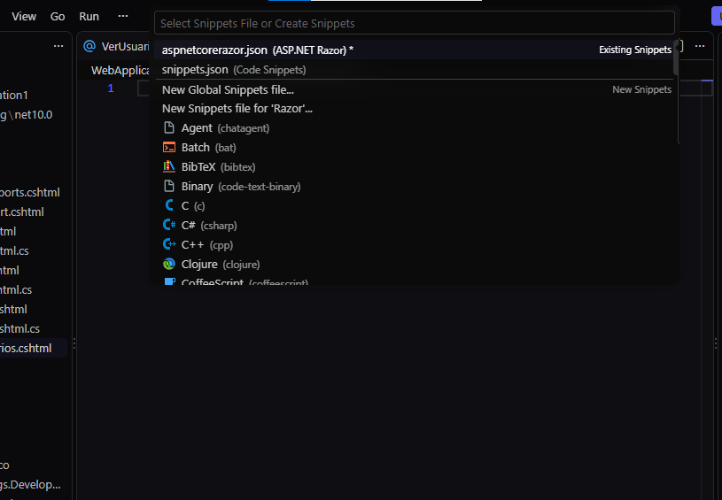
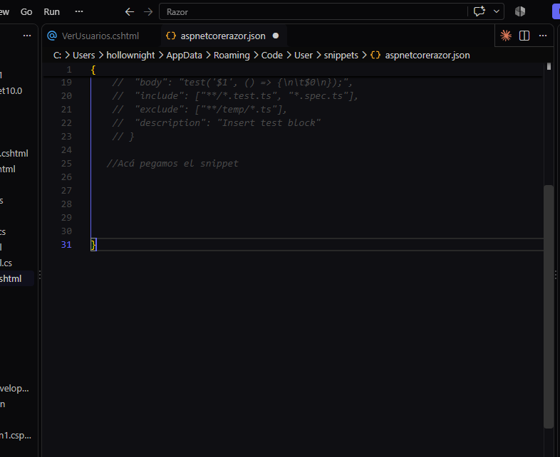
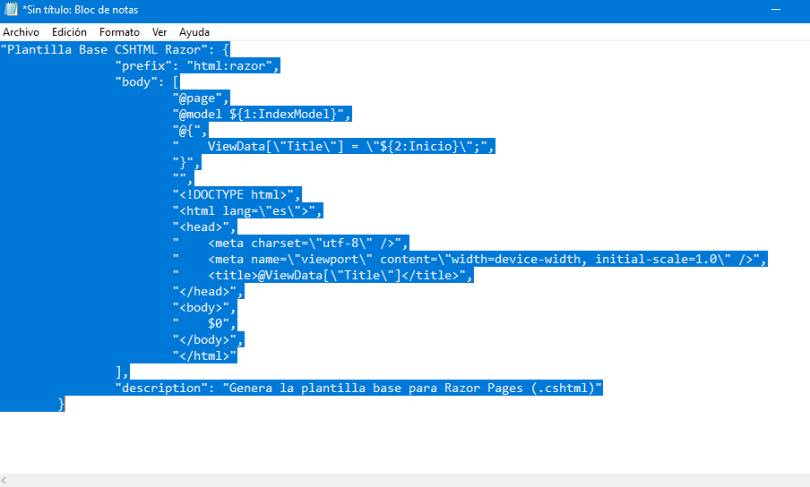
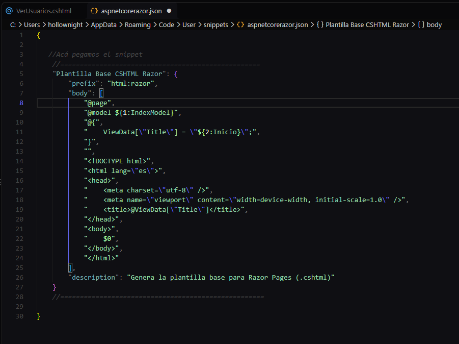
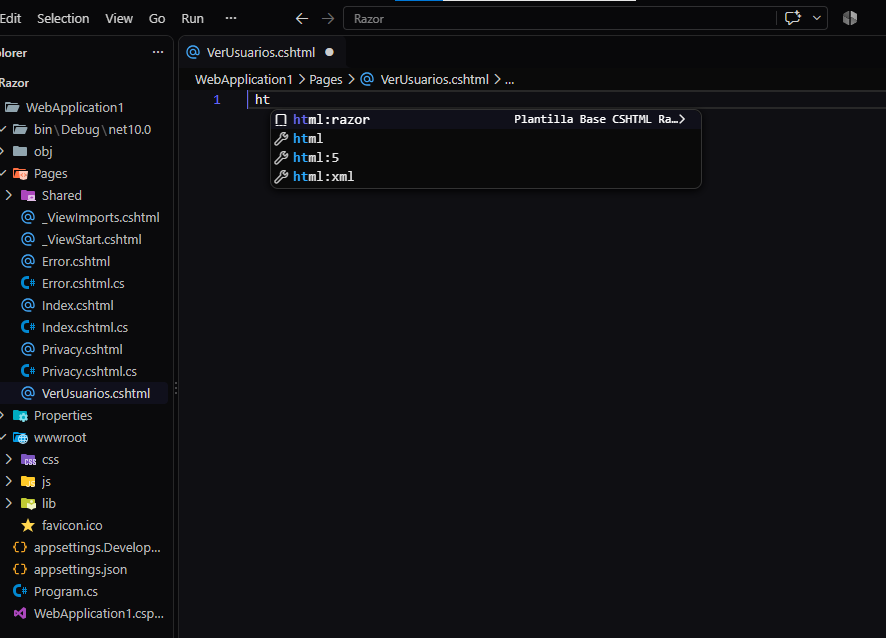

Guía paso a paso para configurar un fragmento de código personalizado que genera automáticamente la plantilla base para vistas Razor Pages.
Antes de comenzar, asegúrate de tener instaladas las extensiones oficiales de Microsoft para garantizar el soporte completo de sintaxis, autocompletado y depuración en C# y Razor:
ms-dotnettools.csharp): Soporte base para el lenguaje C#,
IntelliSense y refactorización.ms-dotnettools.csdevkit): Conjunto oficial de herramientas
para la administración de soluciones, proyectos y archivos Razor.Puedes instalarlas rápidamente yendo a la pestaña de Extensiones en VS Code (Ctrl + Shift + X) y buscando "C#".
En Visual Studio Code, presiona Ctrl + Shift + P (o F1) para
desplegar la paleta de comandos. Escribe Snippets: Configure Snippets y presiona
Enter.

En la lista desplegable, busca y selecciona la opción aspnetcorerazor.json (ASP.NET Razor)
para asociar el snippet con archivos de extensión .cshtml.

Se abrirá el archivo de configuración aspnetcorerazor.json. Ubica la sección interna entre
las llaves principales { ... } donde se agregará la nueva estructura.

Prepara la estructura del snippet en JSON con el prefijo, plantilla HTML/Razor y los puntos de tabulación
($1, $2, $0):
"Plantilla Base CSHTML Razor": {
"prefix": "html:razor",
"body": [
"@page",
"@model ${1:IndexModel}",
"@{\n ViewData[\"Title\"] = \"${2:Inicio}\";\n}",
"",
"<!DOCTYPE html>",
"<html lang=\"es\">",
"<head>",
" <meta charset=\"utf-8\" />",
" <meta name=\"viewport\" content=\"width=device-width, initial-scale=1.0\" />",
" <title>@ViewData[\"Title\"]</title>",
"</head>",
"<body>",
" $0",
"</body>",
"</html>"
],
"description": "Genera la plantilla base para Razor Pages (.cshtml)"
}
Pega el código anterior dentro de aspnetcorerazor.json y guarda el archivo presionando
Ctrl + S.

Abre un archivo de vista Razor (como VerUsuarios.cshtml), escribe el prefijo
html:razor y presiona Tab o Enter para desplegar toda la plantilla.

$1) te
ubica en la clase del modelo, la segunda ($2) en el título del ViewData, y la
tercera ($0) directamente dentro de las etiquetas <body>.